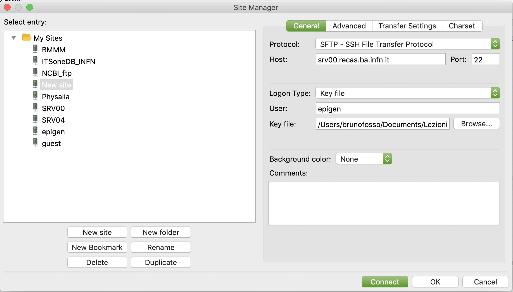
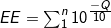

Accesso al server e Introduzione al BASH¶
Accesso al Server
Configurazione FileZilla
Breve introduzione alla linea di comando Bash
Il formato FASTA
Il formato FASTQ
Accesso al Server¶
Il resto delle Esercitazioni richiederà l’ utilizzo di server messi a disposizione dal Datacenter RECAS.
Ad ognuno di voi è stato assegnato un utente che utilizzerete per collegarvi sulle macchine che andremo ad utilizzare.
Le macchine per le esercitazioni hanno i seguenti indirizzi:
212.189.205.77
90.147.102.58
90.147.102.38
Per accedervi dovrete accedere alla tabella disponibile a questo link.
Dovrete scaricare il file chiave corrispondente al vostro user da questa cartella.
Una volta completato il download del file non lo dovete aprire. Al massimo spostatelo nella cartella che trovate più comoda.
Soprattutto per chi di voi utilizza sistemi UNIX-based consiglio di non spostare il file, così lo troverà direttamente in download quando dovrà utilizzare il terminale.
Sistemi operativi UNIX-BASED¶
Gli utilizzatori di sistemi operativi UNIX-based dovranno utilizzare direttamente il terminale (cercate l’ applicazione terminale tra quelle disponibili) e digitare i seguenti comandi:
Il comando generale è:
chmod 600 /path/to/the/key/userX
ssh -i /path/to/the/key/userX userX@srv00.recas.ba.infn.it
Se avete scaricato il file in Downloads:
chmod 600 ~/Desktop/user5
ssh -X -i ~/Desktop/user5 user5@212.189.205.77
Alla prima connessione il sistema vi chiederà se il server sia “fidato” e dovrete digitare yes.
Di seguito vi chiederà la password (vi verrà comunicata al momento) e dovrete inserirla. Notate che il cursore non si muoverà mentre digitate la password!!!.
Se avrete digitato la password correttamente potrete accedere al server.
WINDOWS¶
In windows dovremo utilizzare MobaXterm.
Avviate
MobaXterm;Cliccate su Session;

Cliccate su
SSH:in
Remote hostinserite l’ indirizzo del server a voi assegnato;Spuntate
Specific usernamee nel campo adiacente scrive lo user che vi è stato assegnato;in
advanced SSH settingsspuntateUse private keye dal menù a tendina selezionate il file che avete scaricato.Cliccate su OK e avviate la connessione.
Configurazion FileZilla¶
FileZilla è un tool che ci permette di scambiare file tra il nostro computer ed il server.
Occorre configurarlo in modo appropriato:
Su
FileselezionateSite Manager;Selezionate
New Sitesi aprirà una nuova scheda in cui potrete indicare un nome a vostra scelta;Nel pannello a sinistra vanno inseriti i seguenti parametri:
Protocols:
SFTP SSH File Transfert ProtocolHost:
l'indirizzo del server che vi è stato assegnatoPort:
22Logon Type:
key fileUser:
lo user name che vi è stato assegnatoKey file: selezionate il file che avete scaricato.
Cliccate su
Connect.

Breve introduzione alla linea di comando Bash¶
Alcuni comandi che potrebbero esserci utili durante il tutorial:
pwd: restituisce il path relativo alla directory in cui ci troviamo;cd: permette di spostarci tra le differenti directory;ls: elenca il contenuto di una directory;
Opzioni:-l(mostra più informazioni)-a(mostra i file nascosti)-t(elenca i file in base alla data di creazione)-r(mostra prima il più vecchio);
mkdir: permette di creare una nuova cartella;df: evidenzia lo spazio disponibile;cp: per effettuare la copia dei file;rm: eliminare un file;man: richiedere il manuale di un comando;less: mostra il contenuto di un file;whoami: mostra lo user name dell’utilizzatore corrente;ssh: permette di collegare la nostra macchina con un server remoto
Indice
Il formato FASTA¶
Il formato FASTA è un formato testuale comunemente utilizzato in bioinformatica per annotare le sequenze biologiche, sia nucleotidiche che aminoacidiche.
Di seguito è riportato un esempio:
>gi|46048717|ref|NM_205264.1| Gallus gallus tumor protein p53
(TP53), mRNA
GAATTCCGAACGGCGGCGGCGGCGGCGGCGAACGGAGGGGTGCCCCCCCAGGGACCCCCCAACATGGCGG
AGGAGATGGAACCATTGCTGGAACCCACTGAGGTCTTCATGGACCTCTGGAGCATGCTCCCCTATAGCAT
GCAACAGCTGCCCCTCCCTGAGGATCACAGCAACTGGCAGGAGCTGAGCCCCCTGGAACCCAGCGACCCC
CCCCCACCACCGCCACCACCACCTCTGCCATTGGCCGCCGCCGCCCCCCCCCCATTAAACCCCCCCACCC
CCCCCCGCGCTGCCCCCTCCCCGGTGGTCCCATCCACGGAGGATTATGGGGGGGACTTCGACTTCCGGGT
GGGGTTCGTGGAGGCGGGCACAGCCAAATCGGTCACCTGCACTTACTCCCCGGTGCTGAATAAGGTCTAT
TGCCGCCTGGCCAAGCCGTGCCCGGTGCAGGTGAGGGTGGGGGTGGCGCCCCCCCCCGGTTCCTCCCTCC
GCGCCGTGGCCGTCTATAAGAAATCAGAGCACGTGGCCGAAGTGGTGCGGCGCTGCCCCCACCACGAGCG
CTGCGGGGGGGGCACCGACGGCCTGGCCCCCGCACAGCACCTCATCCGGGTGGAGGGGAACCCCCAGGCG
CGTTACCACGACGACGAGACCACCAAACGGCACAGCGTCGTCGTCCCCTATGAGCCCCCCGAGGTGGGCT
CTGACTGTACCACGGTGCTGTACAACTTCATGTGCAACAGTTCCTGCATGGGGGGGATGAACCGCCGCCC
CATCCTCACCATCCTTACACTGGAGGGGCCGGGGGGGCAGCTGTTGGGGCGGCGCTGCTTCGAGGTGCGC
GTGTGCGCATGTCCGGGGAGGGACCGCAAGATCGAGGAGGAGAACTTCCGCAAGAGGGGCGGGGCCGGGG
GCGTGGCTAAGCGAGCCATGTCGCCCCCAACCGAAGCCCCCGAGCCCCCCAAGAAGCGCGTGCTGAACCC
CGACAATGAGATATTCTACCTGCAGGTGCGCGGGCGCCGCCGCTATGAGATGCTGAAGGAGATCAATGAG
GCGCTGCAGCTCGCCGAGGGGGGGTCCGCACCGCGGCCTTCCAAAGGCCGCCGTGTGAAGGTGGAGGGAC
CCCAACCCAGCTGCGGGAAGAAACTGCTGCAAAAAGGCTCGGACTGACCACGCCCCCTTTTTCCTTTAGC
CACGCCCCTTTCCCTTCAGGCCCGGCCCATTTCCCTTCAGCCCCGGCCCCATTTCCCTTCAGCCACGCCC
AATTTCCCCTTTACCACGCCCCCTTTCCCTTCAGCCACGCCCCCTTTCCCCTTAGCCACTCCCCTTCCCC
CGCGAAAGCCCCGCCCACCCCCGCCGTAACCACGCCCACGCTTCCCACCCCCCTCCCAATCTGACCACGC
CCCCTTTACGCCTTAACCACGCCCCCTCTCTCCTGGCCCCGCCCCCCTCCGCTTTGGCCATGCGTAAATC
CCCCCCCCCGCCCCCCCCCGGCTCATTTTTAATGCTTTTTTTGATACAATAAAACTTCTTTTTTTACTGA
AAAAAAAAGGAATTC
Presenta la riga iniziale che comincia con il simbolo di maggiore “>”, a cui fa seguito un identificativo unico, seguito da una opzionale corta definizione.
Le linee a seguire contengono la sequenza amminoacidica o nucleotidica. La sequenza biologica è rappresentata con un alfabeto con un codice a singola lettera per indicare il nucleotide o l’aminoacido (per avere ulteriori informazioni circa il formato FASTA consultare la relativa pagina Wikipedia).
Indice
Il formato FASTQ¶
Il formato FASTQ è formato testuale utilizzato per annotare le sequenze biologiche nucleotiche ed i quality-score associati a seguito di una procedura di sequenziamento del DNA.
E’ il formato utilizzato per i dati di sequenziamento (per ulteriori informazioni circa il formato FASTQ potete consultare la relativa pagina Wikipedia).
@M03156:25:000000000-AGC3U:1:1101:10602:1714 1:N:0:82
CCTACGGGAGGCAGCAGTAGGGAATCTTCGGCAATGGGGGCAACCCTGACCGAGCAACGCCGCGTGAGTGAAGAAGGTTTTCGGATCGTAAAGCTCTGTTGTAAGTCAAGAACGAGTGT
+
CCCCCGGGGGGGGGGGGGGGGGGGGGGGGGGGGGGGGGGGGGGGGGGGGGGGDGGGGGGEEGGGGGCEFGFGGFGGGGFGGGGDEFCEFFCFDFFFGCFGCFCCCFGGGFDFEC@CFDF
Questo formato presenta una struttura suddivisa in 4 righe:
Riga d’ intestazione che inizia con “@”;
Sequenza biologica;
Riga di separazione che inizia con un “+”. Talora può contenere una descrizione;
Quality score in formato ASCII.
Nella riga d’ intestazione possiamo visualizzare alcune informazioni tecniche:
M03156: è l’ identificativo del sequenziatore. Possiamo dire che è stata utilizzata una Miseq.
25: questo è un contatore progressivo che conteggia il numero di sequenziamenti eseguiti. In questo caso il 25imo.
000000000-AGC3U: identificativo della flow-cell.
1: flowcell line;
1101: tile number nella flowcell;
10602:1714: coordinate cartesiane del cluster;
1: read della coppia PE. Può assumere 2 valore 1 o 2;
N: indica se la read è stata filtrata (Y) o meno (N);
Il Quality Score o Phred Socre è una misura della probabilità che la base letta sia erronea ed è calcolato utilizzando questa formula:
Di fatto maggiore è il Quality score minore è la probabilità che la base chiamata sia erronea:
Q |
P |
ASCII |
|---|---|---|
0 |
1 |
! |
10 |
0.1 |
+ |
20 |
0.01 |
5 |
30 |
0.001 |
? |
40 |
0.0001 |
I |
Conoscendo il quality score associato a ciascuna base delle sequenze ottenute durante il sequenziamento è possibile calcolare l’Expected Error (EE), come:

Di fatto, l’EE è dato dalla sommatoria delle Probabilità di errore P osservate. In modo estremamente empirico, data una sequenza stima il numero di basi che ci aspettiamo siano state chiamate in modo erroneo nella sequenza nella sequenza.
Come valutare la qualità dei dati¶
Una volta ottenuti dei dati di sequenziamento la prima cosa che va fatta è una valutazione della loro qualità.
A questo scopo utilizzeremo un tool ampiamente utilizzato FastQC.
Eseguiamo le seguenti operazioni:
Colleghiamoci al server;
Attiviamo l’ ambiente virtuale che andremo a utilizzare:
source /opt/miniconda3/bin/activate qiime2-2020.11Creiamo una cartella dove scaricheremo i dati per questo tutorial ed eseguiremo le analisi:
mkdir fastqc_test && cd fastqc_testAdesso scarichiamo il file che dovremo utilizzare per le nostre analisi:
wget --no-check-certificate 'https://docs.google.com/uc?export=download&id=1n6mrvGO0_dS-hkICDnIFZNkUFCWbtEhl' -O T216P_S82_L001_R1_001.fastq.gzEseguiamo il FastQC:
fastqc --noextract T216P_S82_L001_R1_001.fastq.gzScarichiamo sui nostri computer i seguenti file i seguenti file:
T216P_S82_L001_R1_001_fastqc.htmlT216P_S82_L001_R1_001_fastqc.zip
Per avere una descrizione dei boxplot potete utilizzare la relativa pagina Wikipedia.
Esercizio 1¶
Applicate il FastQC sui seguenti file:
Usando il seguente comando scaricate i 2 file:
wget --no-check-certificate 'https://docs.google.com/uc?export=download&id=142ipR5m5ELJVpto6EGH8BNbJA9Ur5DAx' -O Sample1_S2_L001_R1_001.fastq.gz
wget --no-check-certificate 'https://docs.google.com/uc?export=download&id=1zGEWBk29KEijLUyZdrq-lLRyN7ikD2Ng' -O Sample1_S2_L001_R2_001.fastq.gz
Eseguite
FastQCsui due file e commentate i risultati ottenuti.
Suggerimento: il comando base per eseguire fastqc èfastqc --noextract NOMEFILE
Indice